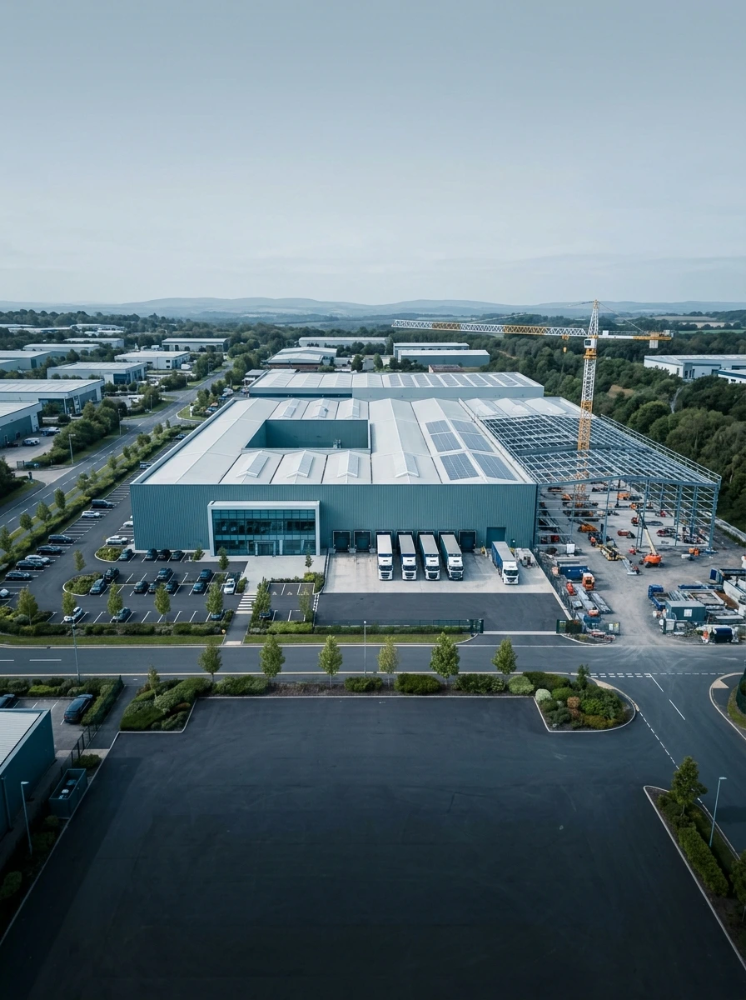
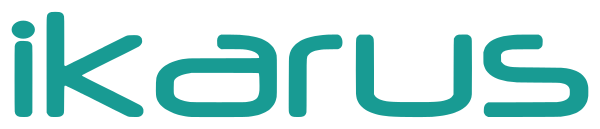
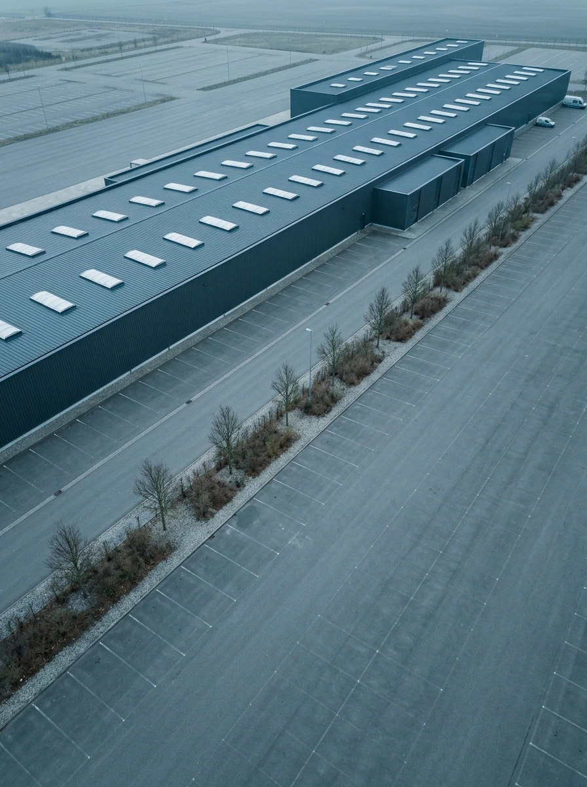
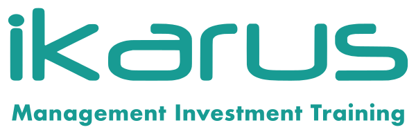

İçindekiler
Bu sayıda imalat yatırımları için yeni Öncelikli Finansman Belgesi, TÜBİTAK'ın yeşil dönüşüm çağrısı, istihdam ve yapay zekâ odaklı KOSGEB destekleri ile savunma ve tarım teknolojilerine yönelik yeni programlar yer alıyor.
Öncelikli Finansman Belgesi
26/11/2023 tarihli ve 32381 sayılı Resmî Gazete'de yayımlanan Yatırım Projelerinin Stratejik Öncelik ve Teknik Değerlendirmesine Dair Tebliğ'de değişiklik yapan Tebliğ yürürlüğe girmiştir. Düzenlemeyle, mevcut TSP Belgesi uygulamasının yanına, imalat sanayine yönelik yatırımlar için daha erişilebilir bir enstrüman olan Öncelikli Finansman Belgesi (ÖFB) ihdas edilmiştir.
1. Yeni Enstrüman
Bakanlıkça belirlenen öncelik kriterlerine göre, finansman programlarına başvuran projeler için kredi tahsisatının uygun olduğunu gösteren belgedir. İmalat sanayine yönelik teşvik belgesi sahibi yatırımcıların başvurusuna açıktır ve TSP Belgesine kıyasla daha düşük eşikli, çoğu hâlde puanlama gerektirmeyen bir kulvar sunar.
2. İki Kulvarın Karşılaştırması
| Kriter | TSP Belgesi | Öncelikli Finansman Belgesi |
|---|---|---|
| Kapsam / uygunluk | Türkiye Yüzyılı Kalkınma Hamlesi (9903 s.) veya Proje Bazlı Devlet Yardımı (2016/9495) kapsamı; ya da Ek-1 Stratejik Öncelikli Ürün, Ek-2 Teknoloji Alanları veya Ek-3 Kritik Hammadde Listesi kapsamındaki projeler | İmalat sanayine yönelik teşvik belgesi sahibi yatırımcılar |
| Asgari yatırım (Ar-Ge dâhil) | En az 1 milyar TL | En az 100 milyon TL |
| Ek mali şart | Son mali yıl bilançosunda en az 50 milyon TL özkaynak veya ödenmiş sermaye | Aranmıyor |
| Değerlendirme | Teknik Komite tarafından puanlama | Ek-5 kapsamındaki belge sahiplerine doğrudan; diğerlerinde Ek-6 kriterlerine göre 50 ve üzeri puan |
3. Değerlendirme Süreci
TSP Belgesi başvuruları Teknik Komite tarafından puanlanmakta ve sonuç yatırımcıya bildirilmektedir. ÖFB başvurularında ise puanlama süreci uygulanmaz; Ek-5'te sayılan teşvik programları kapsamındaki belge sahiplerine ek değerlendirme yapılmaksızın belge düzenlenir, diğer başvurularda Ek-6 kriterlerine göre 50 ve üzeri puan alanlara belge verilir. Program limitlerinin dolması, durdurulması veya sona ermesi hâlinde başvurular puana göre yüksekten düşüğe sıralanarak değerlendirilebilir.
4. Kritik Husus: Faiz / Kâr Payı Desteği
Finansman Programından yararlanan yatırımcılara, bu kullanımdan doğan faiz veya kâr payı ödemeleri için ilgili teşvik belgesi kapsamında ayrıca faiz/kâr payı desteği sağlanmamaktadır. Öncelikli finansmana erişim ile mevcut faiz desteğinden feragat arasında projeye özgü bir tercih söz konusudur. Özellikle faiz desteği tavanı yüksek, büyük ölçekli yatırımlarda karar, iki seçeneğin sayısal olarak karşılaştırılmasını gerektirir.
5. Diğer Önemli Hükümler
- Teşvik mevzuatı desteklerinden yararlanma imkânı bulunmayan yatırımcılar, 4/1-(b) bendi kapsamında teşvik belgesi olmaksızın başvuru yapabilir.
- Davet mektubu verilen veya destek kararı alınan projeler için, teşvik belgesi düzenlenmemiş olsa dahi ön başvuru yapılabilir; kesin başvuru değerlendirmesi belge düzenlendikten sonra yürütülür.
- Teknik Komite uygun görürse, stratejik stoklara yapılacak yatırım tutarı TSP proje büyüklüğünün belirlenmesinde hesaba dâhil edilebilir.
- Aynı anda birden çok Finansman Programı için değerlendirme yürütülse de yalnızca birine başvuru yapılabilir.
TSP Belgesi büyük ölçekli, stratejik ve teknoloji odaklı yatırımlar için puanlamaya tabi kulvarı korurken ÖFB, imalat sanayine yönelik yatırımlara 100 milyon TL eşikli ve çoğu hâlde puanlama gerektirmeyen daha erişilebilir bir yol açmaktadır. Yatırımlarınızın hangi kulvara uygun olduğunun ve faiz desteği–öncelikli finansman dengesinin proje bazında modellenmesinde destek olmaktan memnuniyet duyarız.
TÜBİTAK 1832 Yeşil Dönüşüm
TÜBİTAK Teknoloji ve Yenilik Destek Programları Başkanlığı (TEYDEB), 1832 kodlu “Sanayide Yeşil Dönüşüm Programı”nın 2026 yılı 2. Dönem çağrısını açmıştır. Dünya Bankası destekli Türkiye Yeşil Sanayi Projesi kapsamında yürütülen çağrı, sanayinin düşük karbonlu, kaynak verimli ve sürdürülebilir bir üretim yapısına geçişini hızlandırmayı amaçlamaktadır.
Programın Kapsamı
Desteklenecek projelerin Teknoloji Hazırlık Seviyesi (THS) 3 ile 9 aralığında olması ve proje sonunda en az THS 7 seviyesine ulaşması beklenmektedir. Kapsamda; yeni prototip geliştirme, mevcut bir Ar-Ge prototipi üzerinde ileri geliştirme veya iyileştirme ve prototipin doğrulanmasına yönelik testler gibi ticarileşmeye yönelik teknoloji doğrulama çalışmaları yer alır. Geliştirilen teknoloji veya prototipin ölçek büyütme (scale-up) faaliyetlerinin yapılması zorunludur.
Projelerin aşağıdaki beş ana konu başlığından en az biriyle ilişkili olması gerekmektedir:
Program, salt tesis veya altyapı kurma amaçlı projeleri değil; teknolojik belirsizlik içeren, Ar-Ge niteliği taşıyan projeleri destekler. Çevresel kazanımların ölçülebilir olması beklenir: örneğin birim üretim başına elektrik veya su tüketiminde ya da geri dönüştürülemeyen atık miktarında en az %10 azalma gibi hedefler belirlenmelidir.
Kimler Başvurabilir?
Türkiye'de yerleşik sermaye şirketleri (KOBİ'ler ve büyük ölçekli kuruluşlar) başvurabilir. Başlıca kriterler:
- Kuruluşun tescil tarihinin en az 2 yıl olması (TÜBİTAK 1512 ve/veya 1812 desteğiyle kurulmuş start-up ve spin-off şirketler muaftır).
- Yürütücü kuruluşun en az %75 ortaklıkla özel sektöre ait olması.
- Proje konusuyla ilgili en az lisans seviyesinde bir personelin istihdam edilmesi.
- Savunma sanayine yönelik faaliyet gösteren kuruluşlar veya çıktıları savunma sanayine yönelik projeler, Dünya Bankası kuralları gereği kapsam dışındadır.
- Tek firma veya en fazla 3 ortaklı başvuru yapılabilir.
Destek Tutarı ve Oranları
Firmalara faizsiz geri ödemeli destek sağlanır. Proje başarıyla tamamlandığında teknik başarı kriterleri ve Yeşil Dönüşüm Göstergeleri'nin (YDG) gerçekleşme seviyesine göre desteğin bir kısmı hibeye dönüşebilir.
| Kuruluş türü | Destek | Öz kaynak |
|---|---|---|
| Büyük ölçekli | %70 | %30 |
| KOBİ | %80 | %20 |
| Deprem bölgesindeki KOBİ | %90 | %10 |
| Firma ölçeği | Üst limit |
|---|---|
| Mikro / Küçük | 15.000.000 TL |
| Orta | 24.000.000 TL |
| Büyük | 51.500.000 TL |
Geri Ödeme ve Hibeye Dönüşüm
Geri ödeme, proje bittikten 1 yıl sonra başlar ve en fazla 4 yıl içinde, 6 aylık taksitlerle tamamlanır.
Talep edilen geri ödemeli desteğin tamamı için başvuru aşamasında Banka Referans Mektubu, sözleşme aşamasında ise Teminat Mektubu sunulması gerekmektedir.
Başvuru Süreci ve Son Tarih
Başvurular TÜBİTAK PRODİS sistemi üzerinden (eteydeb.tubitak.gov.tr) yürütülmektedir. 2026-2 çağrısı 3 Ağustos 2026'da açılmıştır.
İstihdamı Koruma Destek Programı
İmalat sanayiinde üretim kapasitesinin ve istihdamın korunması amacıyla yürütülen program, 2026 yılı 2. döneminde genişletilen kapsamı ve iyileştirilen finansman koşullarıyla yeniden başvuruya açılmıştır. Program, NACE Rev. 2 Kısım C (İmalat) kapsamında faaliyet gösteren KOBİ'lerin ve büyük işletmelerin kullandıkları kredilerin finansman maliyetinin bir bölümünü karşılamaktadır.
İşletmenin 2026 Ocak–Haziran (kontrol dönemi) ortalama aylık prim gün sayısını 2026 Temmuz–Aralık (koruma dönemi) boyunca koruması gerekir. Bu şart sağlanmadığında, kredi kullanılmış olsa dahi finansman desteği ödenmez.
| Hedef sektör | Merkez veya şubesinin ana ya da yan faaliyet NACE kodu Kısım C – İmalat kapsamında olan işletmeler |
| Kredi üst limiti | KOBİ'ler: 50 milyon TL · Büyük işletmeler: 150 milyon TL |
| Kredi tutarının hesabı | 2026 Ocak–Haziran döneminde destek kapsamındaki işyerleri için beyan edilen prime esas kazanç toplamının aylık ortalaması |
| Vade / ödemesiz dönem | 36 aya kadar vade, azami 6 ay anapara ödemesiz |
| Finansman desteği | 12 destek puanı |
| Azami faiz / kâr payı | Sabit: %37 · Kâr paylı kredilerde TLREF + 1 |
| Komisyon | Tahsis ve kullandırım dâhil toplam komisyon kredinin %1'ini geçemez |
| Kefalet (KOBİ) | KGF, Katılım Finans Kefalet (KFK) ve İhracatı Geliştirme A.Ş. (İGE) aracılığıyla |
| Başvuru dönemi | 1 Eylül – 31 Ekim 2026 |
| Kredi kullanımı son tarih | 31 Aralık 2026 |
| Ödeme talebi son tarih | 31 Mart 2027 |
Kredi Tutarının Bir Kat Artırımı
Aşağıdaki kriterlerden birini sağlayan işletmeler için hesaplanan kredi tutarı bir kat artırımlı uygulanır:
- Finansal yetkinlik: 2025 hesap dönemi verilerine göre faaliyet kârının sıfırdan büyük olması ve Toplam Borç (KVYK + UVYK) / Faaliyet Kârı oranının 3 veya altında olması.
- Ar-Ge yetkinliği: Ar-Ge veya Tasarım Merkezine sahip olmak, teknoparkta şubesi bulunmak, son 5 yılda başarıyla tamamlanmış TÜBİTAK projesi veya son 5 yılda tescil edilmiş en az bir patenti olmak.
Başvuru Süreci
Başvuru KOSGEB çevrim içi sistemi üzerinden yapılır. Uygun bulunan işletmeler, protokol kapsamındaki 15 kamu, özel ve katılım bankasından birine kredi başvurusunda bulunur. KOSGEB uygunluğu kredinin kullandırılacağı anlamına gelmez; kredi tahsisi bankanın kendi değerlendirmesine bağlıdır. Kredi kullanımı ve istihdam şartının sağlanmasının ardından destek ödemesi KOSGEB sistemi üzerinden talep edilir.
KOSGEB Yapay Zekâ Kredisi
KOSGEB, teknoloji ve yenilik odaklı girişimlerin yapay zekâ alanındaki gelişimini hızlandırmak amacıyla GO Dijital Cüzdan üzerinden sağlanan Yapay Zekâ Kredi Programı'nı açıklamıştır. Program, Teknogirişim Rozeti sahibi işletmelerin yüksek performanslı işlem kaynağı, güvenli veri saklama, yapay zekâ araçları ve veri merkezi hizmetlerine erişimini kolaylaştırmayı hedefliyor.
Başvuru Şartları
- Geçerli Teknogirişim Rozetine sahip olmak,
- KOSGEB Veri Tabanında kayıtlı, aktif ve güncel işletme beyanına sahip olmak,
- Teknoloji ve yenilik odaklı bir projeye sahip olmak.
İşletmeler, KOSGEB ile protokol imzalayan veri merkezlerinden alacakları hizmetler için programdan yararlanabilir.
Desteklenecek Giderler
Başvuru Zamanı
Başvurular 9 Temmuz – 31 Aralık 2026 tarihleri arasında alınmaktadır. Uygun bulunan işletmeler kredilerini GO Dijital Cüzdan uygulaması aracılığıyla kullanabilecektir.
HIT — Yenilikçi Savunma Teknolojileri
Türkiye'nin savunma, güvenlik ve dayanıklılık teknolojileri alanında küresel ölçekte rekabetçi ve yenilikçi bir merkez hâline gelme vizyonunu güçlendirmek amacıyla HIT – Yenilikçi Savunma Teknolojileri Çağrısı ilan edilmiştir.
Önceliklendirilen Başlıklar
- Savunma, güvenlik ve dayanıklılık alanlarında yüksek katma değerli, kritik çift kullanımlı derin teknolojilerin geliştirilmesi, doğrulanması, ticarileştirilmesi ve üretime geçirilmesini destekleyecek altyapıların güçlendirilmesi,
- Yapay zekâ, siber güvenlik, uzay, otonom sistemler ve benzeri çift kullanımlı teknolojilerde Ar-Ge, test, doğrulama ve üretim süreçlerini destekleyen ölçeklenebilir bir ekosistemin güçlendirilmesi,
- Ulusal güvenlik ihtiyaçları ile sanayi, Ar-Ge ve inovasyon ekosistemi arasındaki iş birliğini ve teknoloji transferini destekleyecek entegrasyon mekanizmalarının geliştirilmesi,
- Küresel rekabetçiliği güçlendirecek, üretim kapasitesini artıracak ve ihracat odaklı büyümeyi destekleyecek teknoloji şirketlerine yönelik destek mekanizmaları,
- Savunma ve güvenlik teknolojileri şirketlerinin ölçeklenmesini hızlandıracak yatırım, üretim ve ticarileştirme altyapılarının güçlendirilmesi,
- Türkiye'nin savunma ve güvenlik teknolojilerinde uluslararası bir yatırım, üretim ve ticarileştirme merkezi (Scaling Hub) olarak konumunu güçlendirecek iş birliği mekanizmaları.
Yatırımların Niteliği
Sağlanacak Destekler
- Yatırım yeri tahsisi ve istihdam destekleri,
- Projenin ilgisine göre kamu alım garantisi,
- Kamuya ait test, doğrulama ve validasyon altyapılarına erişim.
Çağrı ile mevcut yetkinliklerin güçlendirilmesi, yenilikçi teknolojilerin ticarileştirilmesinin hızlandırılması ve Türkiye'nin bu alanlarda küresel ölçekte öncü bir teknoloji merkezi olarak konumlanması hedeflenmektedir.
MARKA Yenilikçi Tarım Kredisi
Doğu Marmara Kalkınma Ajansı (MARKA), “2026 Yılı Yenilikçi Tarım Faizsiz Kredi Desteği Programı”nı ilan etmiştir. Program ile Kocaeli, Sakarya, Düzce, Bolu ve Yalova illerinde faaliyet gösteren KOBİ statüsündeki firmaların; yenilikçi tarım ürün ve hizmetlerinin geliştirilmesi, üretilmesi, ticarileştirilmesi ve ihracat kapasitesinin artırılmasına yönelik yatırımlarının desteklenmesi amaçlanmaktadır.
Başvuru Koşulları
- Yalnızca KOBİ statüsündeki işletmeler başvurabilir.
- Firmanın başvuru tarihi itibarıyla kurulmuş ve tescil edilmiş olması gerekir.
- Firmanın merkezinin veya faaliyet/üretim yerinin TR42 Bölgesi'nde kayıtlı olması gerekir.
| Destek türü | Faizsiz kredi |
| Program bütçesi | 140.000.000 TL |
| Proje başına destek | 1.000.000 TL – 8.000.000 TL |
| Uygulama süresi | En fazla 12 ay |
| Kredi vadesi | 24 ay |
| Geri ödemesiz dönem | En az 6 ay |
| Uygun başvuru sahipleri | Kocaeli, Sakarya, Düzce, Bolu ve Yalova'daki (TR42) KOBİ statüsündeki işletmeler |
| Başvuru kanalı | Kalkınma Ajansları Yönetim Sistemi (KAYS) |
Öncelikli Yatırım Alanları
Hedef Sektörler
Makine, otomasyon, yazılım, elektronik, sensör teknolojileri, yapay zekâ, akıllı tarım sistemleri, soğuk zincir, ambalaj, biyoteknoloji, kimya, gıda teknolojileri ve tarımsal teknoloji çözümleri geliştiren firmaların programı incelemesi önem arz etmektedir.
Destek ve teşviklerin kapsamı, oran ve şartları ile takvimi ilgili çağrı ve mevzuat yayımlandığında kesinleşir. Bu sayıdaki programlar için firmalar adına üç adımı öneriyoruz:
Bu üç adımda size destek olmaktan memnuniyet duyarız.


Departmanı